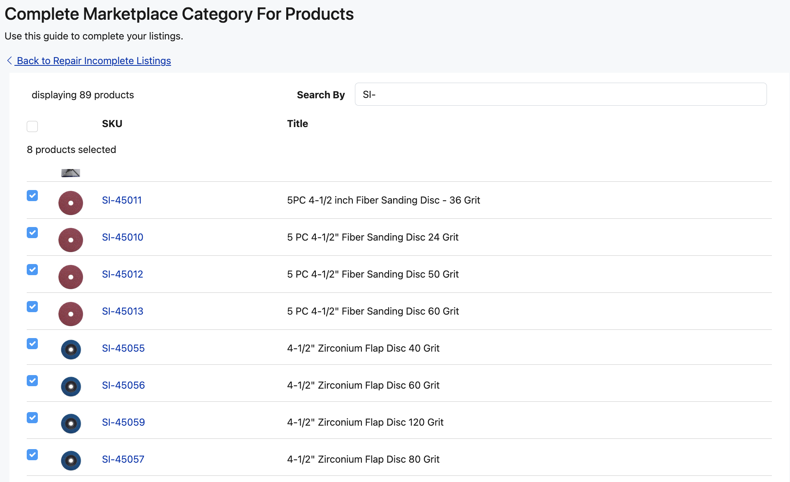
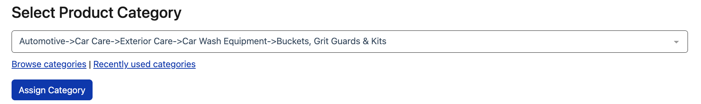
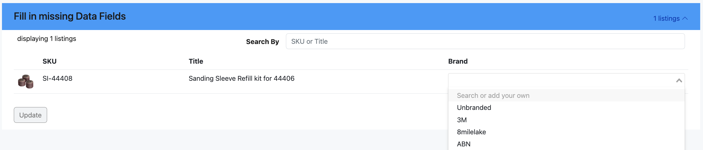

Learn how to add missing information, and fix marketplace listings with Listing Mirror's Repair Incomplete Listings feature.
What each marketplace needs is constantly evolving.
Our tool allows you to remain proactive in solving issues related to missing data, such as listing details, or category-specific information.
Missing Product Category
The Product Category refers to the category assigned to a product on the Product Catalog.
Based on your category mapping, this can affect your listing creation process.
- From the menu bar, click Listings, followed by Repair Incomplete Listings.
- Click Assign Missing Product Categories.
- Select the desired SKUs that fall into the same category.

- Search or browse for the desired category, followed by Assign Category.

Repair Incomplete Listings
If categories change, a marketplace requires a new field, or something is missed during listing creation, we present the issues for you to solve.
Missing Marketplace Category
- From the menu bar, click Listings, followed by Repair Incomplete Listings.
- Select the desired marketplace.
- Click the Marketplace Category dropdown.
- Search or browse for the desired category, followed by Assign Category.
While the Product Catalog is based on Amazon categories, marketplace categories will reflect marketplace-specific choices.
Missing Data Fields
- From the menu bar, click Listings, followed by Repair Incomplete Listings.
- Select the desired marketplace.
- Click the Data Fields dropdown.
- Observe the empty fields, and select a result, followed by Update.
